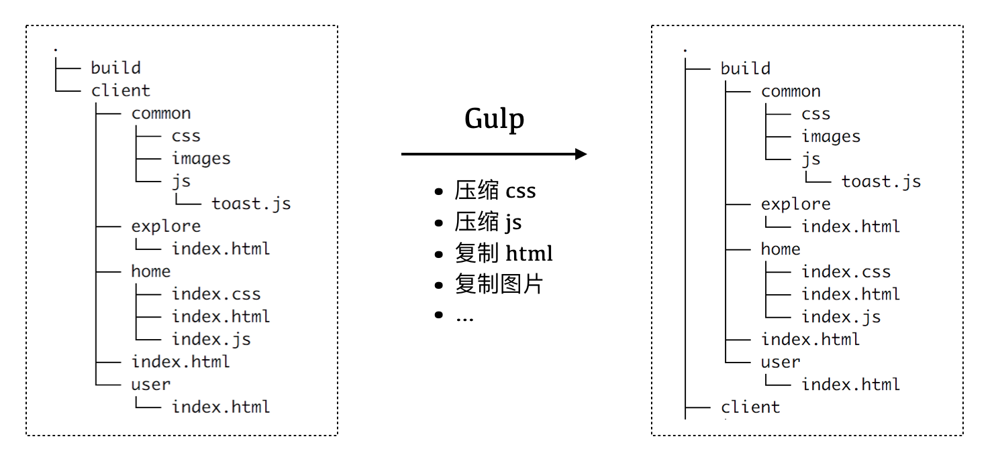
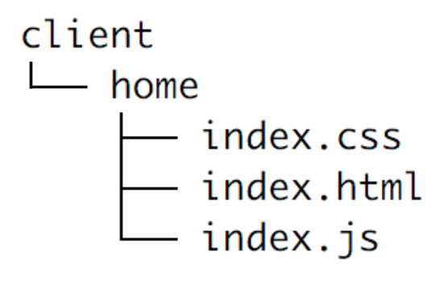
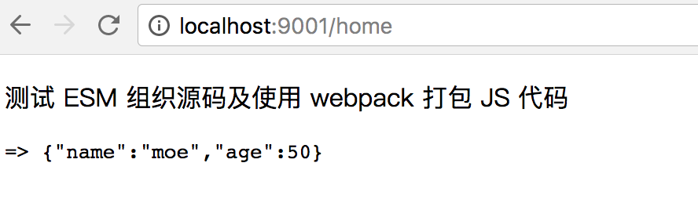
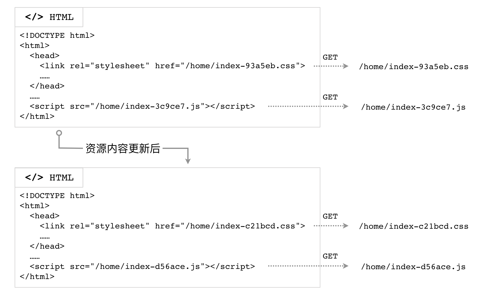

前端资源构建系统演进示例
前端资源的构建方式决定了开发时方方面面的体验：源码结构是否清晰，资源（图片、CSS、JS、音视频等）是否总能通过最短路径查找到，源码变动是否能够自动化刷新到浏览器中，等等。
准备工作：目录与服务
假设我们的根目录下的第一级文件结构这样设计：
.
├── build
├── client
├── gulpfile.js
├── package.json
└── server
└── index.js
其中，./server/index.js 定义了一个极简的静态文件服务器，将 ./build 目录作为静态文件资源服务的根目录：
const path = require('path');
const Koa = require('koa');
const app = new Koa();
const serve = require('koa-static');
// 静态文件服务目录
const staticDir = path.join(__dirname, '../build');
app.use(serve(staticDir));
app.listen(9001);
运行
$ node ./server/index.js
即可启动该服务器。此时，浏览器中访问 http://localhost:9001/home，服务器就会响应 ./build/home/index.html 这个文件。
./client 目录则用于存放我们所有的客户端源码。我们希望构建后，build目录内部的结构基本与源码目录下的结构保持一致，如下图所示：

下面我们使用 Gulp.js，由浅入深，一步一步地搭建起我们的开发构建流程。
极简版本v1：复制
/**
* gulpfile-v1.js
*/
const gulp = require('gulp');
const copydir = require('copy-dir');
const BUILD_ROOT = './build/';
const SRC_ROOT = './client';
gulp.task('build-client', function() {
copydir.sync(SRC_ROOT, BUILD_ROOT);
});
// ** 是指所有深度的文件夹
gulp.task('watch', () => {
gulp.watch(['./client/**/*'], ['build-client']);
});
gulp.task('default', ['build-client', 'watch']);
在上面这个 gulpfile-v1.js 配置文件里，我们定义了一个名为 build-client 的任务，和名为 watch 的任务，前者只是简单粗暴地将 ./client 目录下的所有文件原封不动地复制到了 ./build 目录下，后者则监听 ./client 目录下所有文件的变动，在变动发生时执行复制任务。
版本v2：压缩文件
版本 v1 仅仅是复制源码到静态文件目录，代码没有进行任何压缩处理，直接响应给浏览器，会增加不必要的网络传输。我们可以针对不同类型的文件，分别进行压缩处理。
const path = require('path');
const glob = require('glob');
const gulp = require('gulp');
const fse = require('fs-extra');
const copydir = require('copy-dir');
const cleanCSS = require('gulp-clean-css');
const uglify = require('gulp-uglify');
const BUILD_ROOT = './build/';
const SRC_ROOT = './client';
gulp.task('css', () => {
return gulp.src(`./client/**/*.css`)
.pipe(cleanCSS())
.pipe(gulp.dest(BUILD_ROOT));
});
gulp.task('js', () => {
return gulp.src(`./client/**/*.js`)
.pipe(uglify())
.pipe(gulp.dest(BUILD_ROOT));
});
gulp.task('copy', () => {
const files = glob.sync(`./client/**/*.!(js|css)`);
files.forEach(item => {
fse.copySync(item, item.replace(SRC_ROOT, BUILD_ROOT));
});
});
gulp.task('watch', () => {
gulp.watch(['./client/**/*.css'], ['css']);
gulp.watch(['./client/**/*.js'], ['js']);
gulp.watch(['./client/**/*.!(js|css)'], ['copy']);
});
gulp.task('default', ['css', 'js', 'copy', 'watch']);
我们来分析一下上面的新配置。
使用 glob 模块
Glob 表达式是早期 Unix shell 用于文件名匹配的有限通配符的集合，属于正则表达式的一个变种。类似地，npm 里的 glob 包支持使用类似的通配符集合来匹配文件路径：
*匹配任意个数量的字符（类似于通用正则表达式.*）!(pattern|pattern|pattern)匹配任何不是括号里的字符序列的路径
例如，
glob.sync(`./client/**/*.!(js|css)`)
会寻找到 ./client/ 目录下后缀不是 .js 也不是 .css 的所有文件。
版本v3：模块化
进行了压缩，代码文件的网络传输体积变小，看上去的确很美好。然而，源码总不能只在一个文件里面写，我们还要考虑代码复用的情况（不光是 JavaScript，还有 CSS、HTML）。此时，有必要引入 JavaScript 模块系统、CSS 编译系统以及 HTML 模板。在版本 v3 里，我们实现 JavaScript 和 CSS 的模块化开发及构建方案。
JavaScript 模块化开发与构建
鉴于 ECMAScript 6 Modules（下面简称 ESM）早已标准化，我们不妨以 ESM 模块系统来管理浏览器端的 JavaScript 代码，然后使用 webpack 对客户端 JS 进行依赖分析、打包、压缩等工作。
首先，我们需要一种机制来寻找各个 JS 入口文件。简单起见，我们约定每个页面目录下的 index.js 文件是该页面的入口文件，那么我们可以这样声明一个函数：
// 找到所有的 index.js 文件
function findAllJSEntryFiles() {
const files = glob
.sync('./client/**/index.js')
.map(item => ({
path: item,
name: item.replace('./client/', '').replace('.js', ''),
}));
const pagesJsEntry = {};
files.forEach(item => {
// pagesJsEntry 形如 {
// 'home/index': './client/home/index.js'
// }
pagesJsEntry[item.name] = item.path;
});
return pagesJsEntry;
}
借助函数 findAllJSEntryFiles()，我们在 gulpfile-v2.js 里定义的 js 任务可以更改为使用 webpack 进行构建：
gulp.task('js', () => {
const conf = {
entry: findAllJSEntryFiles(),
output: {
filename: '[name].js',
path: path.resolve(__dirname, 'build'),
}
};
webpack(conf, (err, stats) => {
if (err || stats.hasErrors()) {
console.log('-- error --');
return;
}
// Done processing
console.log('\nwebpack 构建完成 ✔\n');
});
});
通过这样的配置，我们就可以方便地使用 ESM 了。以 ./client/home 页面为例，通过下面的一个小功能，测试一下打包的结果是否正确。目录结构与 HTML 代码：

<!-- ./client/home/index.html -->
<!DOCTYPE html>
<html>
<head>
<title>Home Page</title>
</head>
<body>
<p>测试 ESM 组织源码及使用 webpack 打包 JS 代码</p>
<pre id="output"></pre>
<script src="/home/index.js"></script>
</body>
</html>
./home/index.js 里，引入常用的 underscore，调用 _.pick 方法从一个对象里提取部分键值对，然后把新的对象插入到文档里：
import _ from 'underscore';
// 调用 underscore 的 pick 方法
var pickedData = _.pick({name: 'moe', age: 50, userid: 'moe1'}, ['name', 'age']);
document.querySelector('#output').innerHTML = '=> ' + JSON.stringify(pickedData);
如果构建的结果正确，那么我们可以在浏览器里看到这样的结果：

CSS 模块化开发与构建
CSS 也有多种方案做到模块化、代码复用。这里我们选择使用 less 作为 CSS 源码的构建工具：
const gulpLess = require('gulp-less');
// ...省略一些代码
gulp.task('css', () => {
return gulp.src(`${SRC_ROOT}/**/*.css`)
.pipe(gulpLess())
.pipe(cleanCSS())
.pipe(gulp.dest(BUILD_ROOT));
});
版本v4：资源版本标识
我们现在实现了前端 JS/CSS 资源的快速构建，然而，还面临一个问题：缓存。
为了提升 Web 前端网络性能，网站的 JavaScript、CSS 文件通常都会设置缓存策略，以免每次都重新从服务器下载资源。按照我们前面的构建步骤，可能就会因为浏览器认为缓存未过期而导致新的代码不会被请求到。
Cache-Control: max-age=86400
如果响应头是上面这样，设置了资源的过期时间为 1 天（86400秒），那么浏览器在从第一次下载该资源后的24小时内，不会再从服务器请求，而是直接读取缓存内容。
所以，我们不能抛弃缓存，又要有一种机制可以使 JS/CSS 得以更新。社区提出的解决方案是构建时计算文件内容的摘要，将其放到文件名中，作为版本标识；然后确保 HTML 文档不要被缓存（Cache-Control: no-store）；所有的 JS/CSS 资源依然使用足够长的 max-age。

摘要算法
根据内容计算出唯一的标识码，通常采用摘要算法。摘要算法也称散列算法、哈希算法，可以根据全部数据，计算得到定长的字符序列。好的摘要算法应当具备这样的特点：
- 对于相同的输入，可以得到相同的散列值
- 对于不同的输入，只有极低的概率会得到相同的散列值（即好的防碰撞特性）
- 难以逆向计算，已知摘要值，难以推算出其原始的输入值
摘要算法属于计算机安全领域的概念。Node.js 的核心模块 crypto 支持多种摘要算法（例如 MD5、SHA-1 等）。前端领域常用 MD5（Message Digest Algorithm 5，消息摘要算法-版本5） 对内容进行摘要计算。MD5 可以生成 128 位二进制的校验值，一般用 32 位十六进制数表示。MD5 的一个常见应用场景是作为文件完整性校验的判据。
首先，我们需要定义一个方法 md5File()，它可以读取给定文件的内容，然后计算其摘要值并返回：
const crypto = require('crypto');
const fs = require('fs');
// ... 省略一些代码
/**
* 根据文件的内容，计算其 md5 摘要
* @param {String} filename [文件的路径]
* @return {String} [文件内容的 MD5 摘要]
*/
function md5File(filename) {
const content = fs.readFileSync(filename, {encoding: 'utf8'});
return crypto
.createHash('md5')
.update(content, 'utf8')
.digest('hex');
}
CSS 任务
我们需要在原来的 CSS 编译任务结束并且文件也写完后，进行摘要计算的操作，所以需要监听 gulp stream 的事件。
gulp.task('css', () => {
removeFiles(`${SRC_ROOT}/**/index-*.css`);
const stream = gulp.src(`${SRC_ROOT}/**/*.css`)
.pipe(gulpLess())
.pipe(cleanCSS())
.pipe(gulp.dest(BUILD_ROOT));
stream.on('error', (err) => {
console.error(err.message);
});
stream.on('end', () => {
const assets = [];
glob
.sync(`${BUILD_ROOT}/**/index.css`)
.forEach(item => {
const md5sum = md5File(item);
const newName = item.replace('index.css', `index-${md5sum}.css`);
fs.renameSync(item, newName);
assets.push({
chunkName: newName.replace(BUILD_ROOT, ''),
name: item.replace(BUILD_ROOT, ''),
htmlName: item.replace(BUILD_ROOT, '').replace('.css', '.html'),
});
});
assets.forEach(asset => {
const cssName = asset.name;
const htmlPath = BUILD_ROOT + asset.htmlName;
const content = fs.readFileSync(htmlPath, {encoding: 'utf8'});
const newContent = content.replace(cssName, asset.chunkName);
fs.writeFileSync(htmlPath, newContent, 'utf8');
});
console.log('\n css 文件摘要计算及重命名完成 ✔');
});
});
JavaScript 任务
与 CSS 类似，JavaScript 的摘要计算也需要在编译完成后进行。不过我们这次借助 webpack 提供的回调来处理。webpack(conf, callback) 方法接收的第二个参数为函数，会传入 (err, stats) 两个数据，在编译正常结束后，stats.toJson().assets 数组的每一项，对应了入口文件的打包后的结果，包括文件名、摘要值等：
[{
"chunkNames": ["home/index"], // 入口名称（entry 的 key）
"chunks": [1], // 入口文件数量
"emitted": true, // 是否正确生成了文件，术语 `emit` 在 webpack 中是“生成”的意思
"name": "home/index-564746c23aed161469a8.js", // 打包后携带摘要值的文件名
"size": 16856 // 文件的字节数
}, ...]
gulp.task('js', () => {
removeFiles(`${SRC_ROOT}/**/index-*.js`);
const conf = {
entry: findAllJSEntryFiles(),
output: {
filename: '[name]-[chunkhash].js',
path: path.resolve(__dirname, 'build'),
}
};
webpack(conf, (err, stats) => {
if (err || stats.hasErrors()) {
console.log('-- error --');
return;
}
// 替换模板中的脚本引用
const assets = stats.toJson().assets;
assets.forEach(asset => {
// 入口JS 的文件名，如 home/index.js
const jsName = asset.chunkNames[0] + '.js';
// 页面 HTML 文件名，如 home/index.html
const htmlName = asset.chunkNames[0] + '.html';
// 页面 HTML 文件的路径，如 ./build/home/index.html
const htmlPath = BUILD_ROOT + htmlName;
// 读取页面 HTML 文件的内容，将入口 JS 的路径替换为添加了摘要值的路径
let content = fs.readFileSync(htmlPath, {encoding: 'utf8'});
content = content.replace(jsName, asset.name);
fs.writeFileSync(htmlPath, content, 'utf8');
});
// Done processing
// ...
});
});，
版本v5：使用 CDN
现在，我们可以对所有的资源进行构建并将 ./build/ 目录作为静态文件服务的目录，对外提供页面服务了。不过，这样的方案有一点问题，就是所有的 JS/CSS/图片 等资源的请求，都会从服务器网络进行下载，如果客户端的网络节点与服务器较远，那么会遭遇较高的网络延迟。此外，浏览器通常会限制同时发起的 HTTP 请求的数量，这些资源想要实现尽可能的并行下载，就需要放置到多个不同的域名下。解决这些问题的方案是采用 CDN（Content Delivery Network，内容分发网络）。
Unix/Linux 系统下，我们可以使用 rsync 程序将 ./build/ 这个目录完全同步到远程某个 CDN 部署机器上。rsync 是以 GNU 通用公共许可证发行的自由软件，它能同步更新两处计算机的文件与目录，并适当利用差分编码以减少数据传输量。